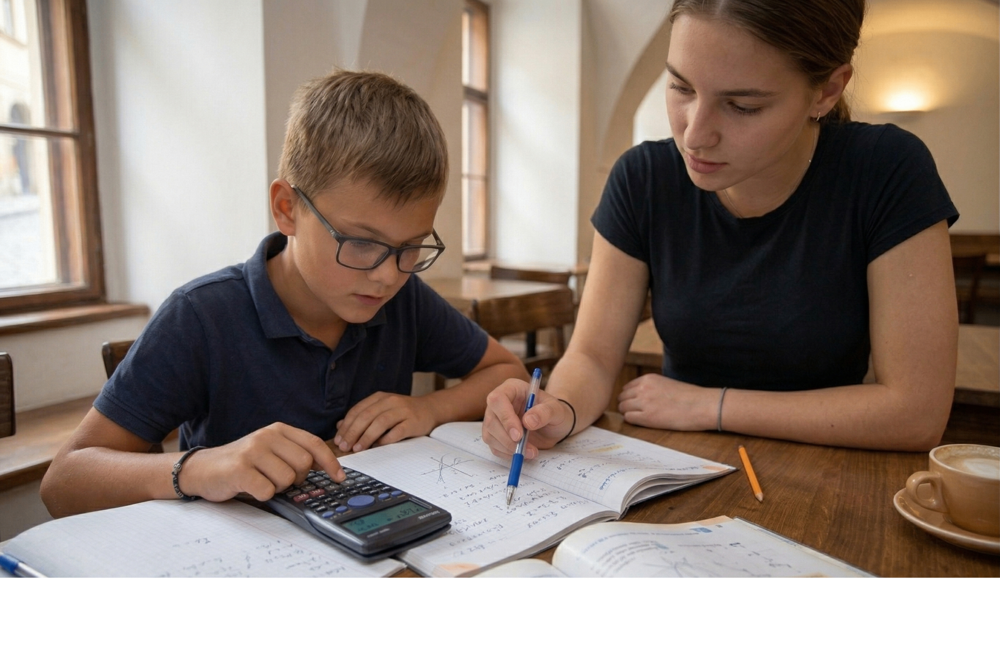

Zde najdete odpovědi na nejčastější dotazy, které můžete mít, nebo pokud si nevíte rady.
Samozřejmě! Opět stačí jen zavolat na číslo nebo kontaktovat náš e-mail.
Ano. Domluva o místě, ať je to ve škole nebo u vás doma, je na vás. Stačí dodat informace při objednávání.
Ano, vlastní pomůcky jsou nutné, protože žáci se budou hlavně učit ze svých vlastních knih.
| Den | Čas | Místo / Formát |
|---|---|---|
| Po-Pá | 14:00 – 18:30 | Ve škole, U vás doma |
| Sobota | 16:00 – 18:30 | Ve škole, Distanc. (Teams) |
| Neděle | Zavřeno |
